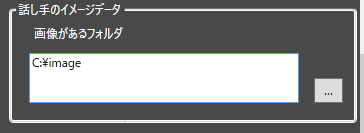
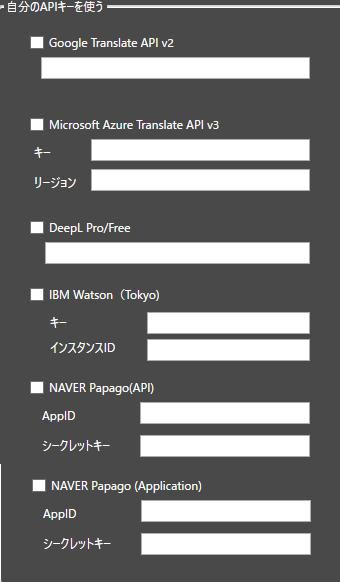

オプション設定項目
アンバサダーの設定
- ゆかりねっとコネクターのアンバサダーと公式担当が合計１０名います。
- こちらを設定することで推し設定することができます。
推し設定について
この設定をしても、ゆかりねっとコネクターNEOのメイン動作は何も変わりません。 見た目がちょっと変わって、Happyになれるという機能です。
ブラウザウインドウサイズ
- 字幕を表示するウィンドウのサイズを強制的にロックします。
- OBSなどに取り込む際、数字でサイズを決めたい方に向いています。
翻訳APIオプション

翻訳に関する動作を変更できます。
| オプション | 機能 |
|---|---|
| 翻訳APIの使用を節約する | ON：翻訳途中の翻訳間隔を減らします。 OFF: 認識途中でも翻訳を実行します |
| 節約効果を最大化 | ON:文章確定時のみ翻訳します OFF:翻訳途中の翻訳間隔をさらに減らします。 |
オプション
- ブラウザに関する動作を変更できます。
- ChromeとEdgeのどちらを使うかを設定できます。
そのほか：
| オプション | 機能 |
|---|---|
| ブラウザ引数 | ブラウザの動作を切り替えます。 例えば --incognito をいれると、シークレットモードで起動します。 |
| 前回のミュート状態を記録 | 音声認識のミュートボタンを再起動しても保持します |
| システムメッセージをOFF | 「設定を変更しました」を表示しないようにします |
話し手のイメージデータ

- トークセッションなど、話し手の絵を使うシチュエーションで読み込まれる絵を置きます。
- ファイル名は、
（話者名）.pngにします。 - ファイルサイズは、
100 x 100程度の正方形にします。
自分のAPIキーを使う

- 自分で契約したAPIキーを使うことができます。
- 使いたい翻訳エンジンが決まったら、当該エンジン提供メーカーと契約を行い、キーを入手してください。
- 入手したキーを設定し、翻訳設定でエンジンを使う選択をしてください。
翻訳キャッシュ

| オプション | 機能 |
|---|---|
| キャッシュを有効化 | 以前の翻訳結果を記憶し、同じ文を翻訳するときに前回の結果を活用します |
| アプリを終わらせても辞書を保持 | アプリ再起動しても前回の翻訳結果を活用します |
| キャッシュをクリア | 記憶したデータをクリアします。 |
不具合調査用ログ

*不具合が発生しているときに、解析を支援するためのデータを得られます。
| オプション | 機能 |
|---|---|
| デバッグモードを有効 | 内部動作を解析するデータをログに出力するようになります |
| ログフォルダを開く | ログがある場所を開きます |
最終更新日:
August 15, 2022